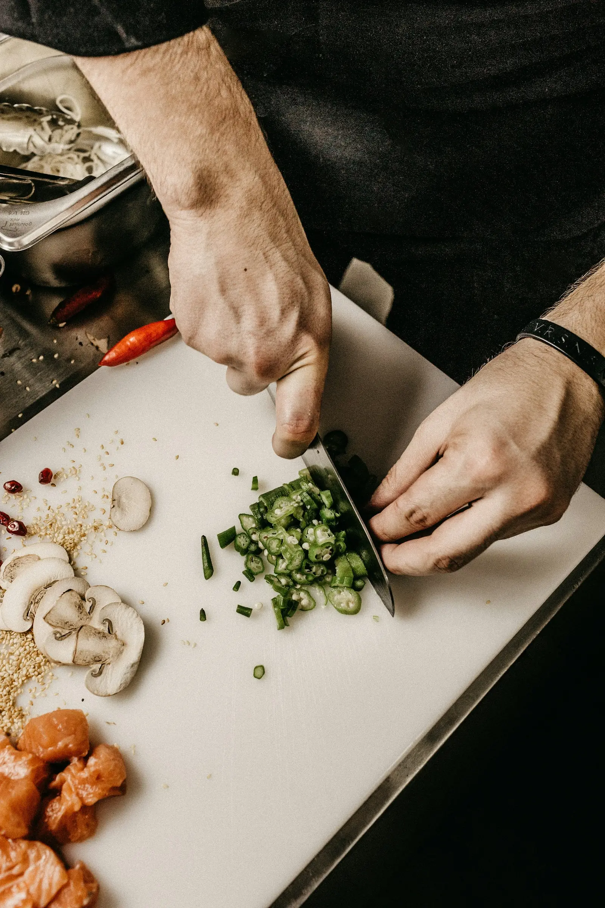

In 45 Minuten zurück im Büro
Wir wissen, dass deine Mittagspause nicht ewig ist. Sag uns Bescheid, dann geht es besonders flott.

Mittagstisch in Lüneburg
Dienstag bis Freitag von 11:30 bis 14:30 Uhr – mit wechselnder Wochenkarte, immer auch vegetarisch. Gut essen, ohne die Mittagspause zu sprengen.
Beispiel-Wochenkarte
Hähnchenbrust mit Rahmchampignons und Bandnudeln
Vegetarisch: Linsen-Bolognese mit Bandnudeln
Frikadellen vom Strohschwein, Kartoffelpüree, Rahmkohlrabi
Vegetarisch: Kartoffelpuffer mit Apfelmus
Lachsforelle mit Senfsoße und Salzkartoffeln
Vegetarisch: Ofengemüse mit Kräuterquark
Heidschnucken-Bratwurst, Bratkartoffeln, Krautsalat
Vegetarisch: Graupen-Eintopf mit Wurzelgemüse
Inklusive Tagessuppe oder kleinem Salat. Die Wochenkarte wechselt jeden Dienstag.
Wir wissen, dass deine Mittagspause nicht ewig ist. Sag uns Bescheid, dann geht es besonders flott.
Stempeln lassen, sammeln, genießen. Gilt auch fürs Mitnehmen.
Bis 11 Uhr anrufen, Essen abholen – in Mehrwegschalen, die du beim nächsten Mal wieder mitbringst.
Häufige Fragen
Dienstag bis Freitag von 11:30 bis 14:30 Uhr. Am Wochenende kochen wir à la carte.
Jedes Wochengericht kostet 12,90 € inklusive Tagessuppe oder kleinem Salat. Mit der Mittagskarte ist jedes elfte Essen gratis.
Ja. Ruf bis 11 Uhr an, dann steht dein Essen pünktlich auf dem Tisch – oder in der Mehrwegschale zum Mitnehmen.
Für Teams ab fünf Personen reservieren wir gern feste Tische. Auf Wunsch stellen wir eine Sammelrechnung.
Gut essen. Zusammen sein.
Für Gruppen ab fünf Personen reservieren wir gerne feste Tische. Ansonsten: einfach vorbeikommen.